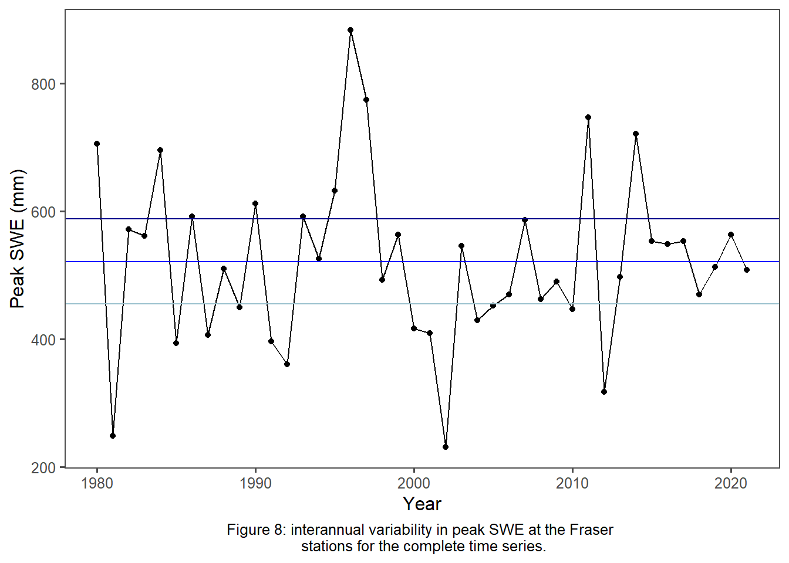

Chapter 6 Discussion
Load packages
library(tidyverse)
library(tidyr)
library(httr)
library(jsonlite)
library(plotly)
library(lubridate)
library(dataRetrieval)
library(sf)
library(mapview)
library(readr)
library(dplyr)
library(purrr)
library(fuzzyjoin)
library(furrr)
library("snotelr")
library(readxl)
library(stats)
library(tmap)
library(tigris)
library(elevatr)
library(raster)Using FDCs, baseflow computed as it occurs after snowmelt has a very low correlation to baseflow computed using the traditional WY across the study basins. This is expected given that the date range of the MY is significantly different from the WY (Figure 1).
Overall, there appears to be a small positive correlation between peak SWE and baseflow in from the same MY (Figure 4). This is likely due to the relatively small basin size and snow-dominated nature of these systems.
The variability of correlation values within the low snow years is likely because there is high interannual variability in peak SWE (Figure 7). High years could influence the lag effects of low snow years to the point that a correlation is not obvious in the low snow years. High snow years clearly have a lasting impact on the amount of water in the streams during the same year that the melt occurs, and for a few years after even if a low year follows (Figure 5).
The standard deviations and COV were similar across most station pairs except for Vail and Steamboat. Vail had generally lower baseflow values with more high outliers than the other stations, and Steamboat also had high baseflow outliers in the time series. In general, the normalized variation in baseflow and peak SWE were similar for the time series (Table 2). This is likely because baseflow and peak SWE from the same year were positively correlated for most stations (Figure 5). It is important to note that, because COV values are normalized, there can appear to be large variability in average baseflow when the total standard deviation is less than 0.15 mm/day for every station examined which is a very small quantity of water.
The multivariate regressions were not able to indicate any trends across basins. Basins that had a positive correlation coefficient or significant p-value were likely false positives due to the small number of years compared to the number of variables (lags). In the future, it could be useful to decrease the number of lags and only use lags 0 through 3. Increasing the total number of years in the time series could also improve results. Using just high snow or just low snow years did not provide a large enough sample size to run an accurate regression.
highsno <- mean(fraser$max_swe) + sd(fraser$max_swe)*0.5
lowsno <- mean(fraser$max_swe) - sd(fraser$max_swe)*0.5
mean <- mean(fraser$max_swe)
ggplot(fraser, aes(x = my, y = max_swe))+
geom_line()+
geom_point()+
ggthemes::theme_few()+
labs(x = "Year", y = "Peak SWE (mm)")+
geom_hline(aes(yintercept = highsno), color = 'blue4')+
geom_hline(aes(yintercept = mean), color = 'blue')+
geom_hline(aes(yintercept = lowsno), color = "lightblue3")+
labs(caption = "Figure 8: interannual variability in peak SWE at the Fraser \n stations for the complete time series.")+
theme(plot.caption = element_text(hjust = 0.5))
The similarities across spatially similar basins were likely due to similar latitudes, peak SWE values, and onset of melt timing. However, a potential next step for this research is to group the watersheds by landcover and orientation to evaluate the impact that these traits might have on the correlation between peak SWE and baseflow. Common landcover types in this region include herbaceous, evergreen forest, shrub/scrub, and perennial ice/snow. Depending on the type and quantity of vegetation in a basin, snowmelt could be absorbed or runoff differently. The orientation of the basin could indicate the amount of incoming solar radiation and, therefore, evaporation and/or sublimation of SWE prior to entering the stream (Hickley et al., 2014). In addition, the slope of the basin or elevational gradient could indicate that water is running off into the stream faster with less time for absorption or evaporation. And also, the soil characteristics and geology …
As mentioned earlier, the use of isotopic tracers could get to the answer to the question “do snowmelt contributions to streams have a lagged impact on baseflow?” Future research could examine what proportions of streamflow are “old” versus “new” water to see how much snowmelt is stored from previous years. Rain on snow events, while not common at these paired stations currently, could become more common in the future with climate change (Miller et al., 2014; Dierauer et al., 2018; Moran-Tejeda et al., 2022) leading to a scenario in which we cannot assume that 100% of low flows are baseflow. Isotopic tracers could improve the accuracy and understanding of the approach used in this paper.
6.1 Conclusion
In snow-dominated watersheds, snowmelt is the primary driver of increases in streamflow in the spring. Baseflow appears to be correlated to peak SWE especially during the same year. This trend can continue with subsequently lagged years during high-snow years. However, due to interannual variability in peak SWE in Colorado, the impact of low-snow years on this trend is variable. This is important to understand because high snow years can potentially mute the impacts of low-snow years on the watershed. While further investigation of basins characteristics is needed, it appears that basins of similar latitudes, location and area tend to have similar correlations between baseflow and peak SWE.